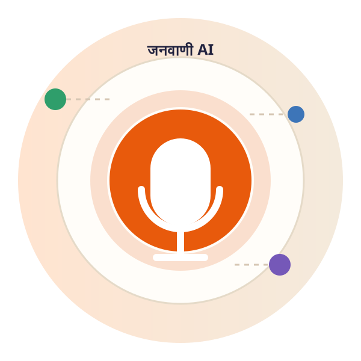
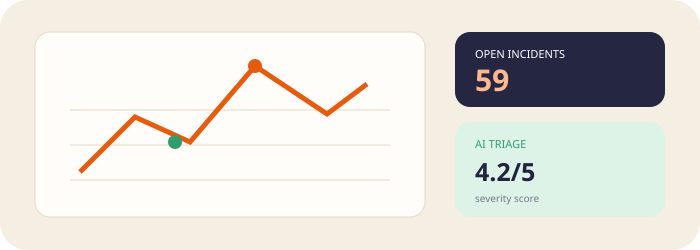

Speak naturally
अपनी भाषा में बोलेंHindi, Malvi, Bundeli, Bagheli, Nimadi या English में अपनी समस्या बताइए.
बस बोलिए। JanVaani आपकी बात समझता है, समस्या को पहचानता है, सही विभाग तक पहुँचाता है और आपकी शिकायत की स्थिति आवाज़ में बताता है।

Voice, photo और location को एक structured civic complaint में बदलें.
Hindi, Malvi, Bundeli, Bagheli, Nimadi या English में अपनी समस्या बताइए.
Visual evidence से issue type और severity समझने के लिए AI pipeline तैयार है.
GPS, EXIF और ward context से complaint routing architecture तैयार होता है.
Issue + location + priority से responsible civic desk और SLA workflow जुड़ता है.
Incident hotspots, priority और resolution activity का visual command view.
Status, department, next action और expected time — one clear answer.
📍 Vijay Nagar, Indore • Road hazard
Before/after evidence के साथ closure workflow.
AI comparison suggests repair completion.
हर step transparent, trackable और explainable.
Citizen reports become an operational queue for civic teams.

Heavy traffic corridor • two-wheeler hazard • 23 linked citizen reports.
Common urban civic issues citizens can report through voice.
अपनी भाषा में बोलिए. JanVaani आपकी बात को action में बदलने के लिए designed है.